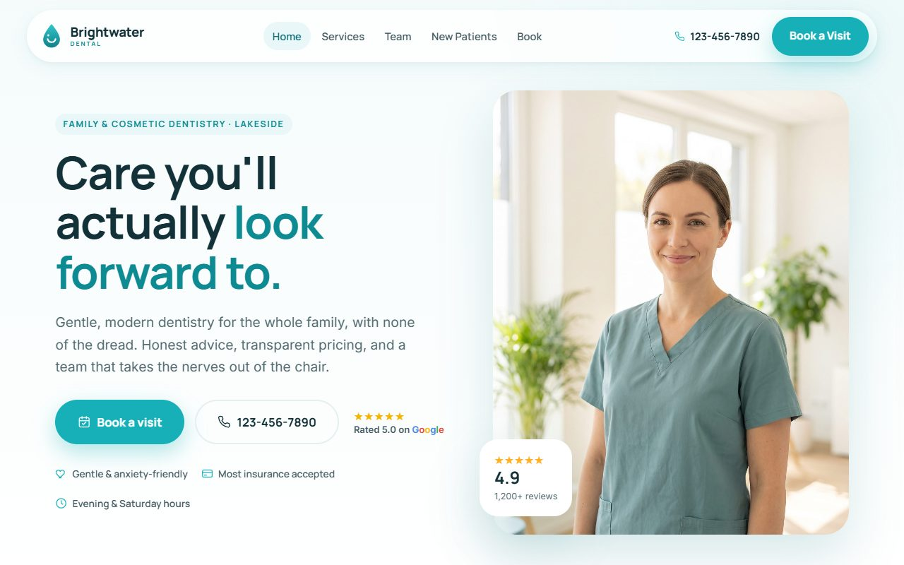
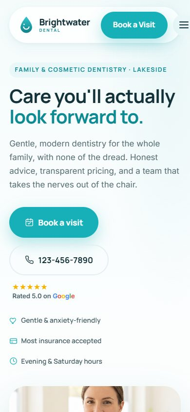

The New Patient Who Calls, Gets Voicemail, and Books Elsewhere.
You went to school to treat patients, not to chase no-shows, answer the phone between appointments, and finish charts at 9pm. When the schedule has holes and the phone goes to voicemail, it's your production -- and your evenings -- that pay for it.

Meet Cedar Ridge Family Dental
Dr. Alvarez runs a three-chair general and family dental practice in a growing suburb. She has a front-desk coordinator and two hygienists, a full recall book, and a steady flow of new patients from Google and word of mouth. She spends most of her energy chairside and on team management, which leaves the phones, forms, reviews, and follow-up to get handled 'when there's time' -- which usually means not consistently.
Sound familiar? Dr. Maria Alvarez isn’t doing anything wrong — the work is great. The money slips out somewhere else: the calls nobody answers, the quotes that go cold, the reviews that never get asked for. Here’s exactly where it’s going, what it’s costing, and what we’d do about it.
Before they book, they judge your website
New patients decide whether to trust you long before the first visit. Here’s a live demo we built for a family dental practice: it gets found on Google, calms the nerves with a clean modern look, and takes the booking online while your front desk is with a patient. Yours gets built from scratch, the same way.


Six Gaps Costing Medical & Dental Owners Every Week
Every one of these is a problem we can actually fix — and every fix links to how we do it. Follow the thread as far as you want.
Empty chairs from no-shows and last-minute cancellations
It's 2pm. A patient just no-showed a crown seat, and the coordinator is scrambling to fill an hour that's now dead. That chair, that hygienist, and that overhead are all still costing you -- with nothing coming in.
Patients forget, double-book, or cancel too late to backfill. Without automated reminders and an easy way to confirm or reschedule, holes open in the schedule that your team can't fill fast enough. Every open chair-hour is lost production you can't get back -- and it stacks up week after week. Most no-shows come down to simple forgetfulness, which is exactly the kind of thing a reminder system prevents.
How Top Shelf fixes it: We set up automated text and email reminders with one-tap confirm and reschedule, plus a waitlist that offers freed-up slots to patients who want in sooner. Fewer forgotten appointments, and holes that fill themselves. More on AI & Automation →
You get: Automated multi-touch appointment reminders, one-tap confirm/reschedule, and an auto-fill waitlist for cancellations.New-patient calls hitting voicemail
A new patient with a toothache calls at 12:40 during your lunch, or at 6:15 after you've closed. It rings out to voicemail. They don't leave a message -- they just call the next practice on Google. You never even knew they called.
New patients calling to book get sent to voicemail during lunch, when the desk is with someone, or after hours. Most won't leave a message; they'll book with whoever answers first. New patients are the highest-value calls you get, and they don't call twice. A single captured new-patient call is worth an appointment now plus years of recurring care.
How Top Shelf fixes it: An AI phone receptionist answers every call -- during lunch, when the desk is slammed, and after hours -- greets callers by your practice name, answers common questions, and books or captures the new patient so nothing rings out to voicemail. More on AI Phone & Receptionist →
You get: 24/7 AI phone receptionist that answers, books, and captures every caller; instant text-back on any missed call.Paper intake forms slowing the front desk and the chair
A new patient shows up on time but spends 15 minutes on a clipboard in the waiting room while your coordinator re-keys their history into the software by hand -- and you're already running behind before you've said hello.
Paper or clunky intake forms mean patients fill out the same information by hand, staff re-type it, and errors creep in. A friction-heavy first visit makes people less likely to come back -- and some don't complete booking at all. Front-desk hours lost to re-keying, a slower waiting room, and a first impression that costs you second visits. Digital intake alone saves roughly 10-15 minutes of staff time per new patient.
How Top Shelf fixes it: We put your intake and consent forms online so patients complete them on their own phone before they arrive. You get clean, complete information ahead of time and a check-in that takes seconds. You are responsible for confirming your own HIPAA obligations; we help you use tools set up to support them. More on Documents & E-Sign →
You get: Mobile-friendly digital intake and consent forms patients complete before the visit, ready when they walk in.Lapsed patients quietly slipping off the recall book
You pull a list and realize hundreds of patients haven't been in for over a year. They didn't leave angry -- they just fell off the hygiene schedule, and nobody had time to call them back. That's a full column of hygiene sitting idle.
Every practice carries a pile of inactive patients -- people overdue for recall who simply drifted. Without a system to reach out, they stay gone, even though they were happy with you. Reactivating a lapsed patient costs a fraction of winning a brand-new one, so the book you already have is your cheapest source of production -- if someone works it. A typical practice carries hundreds to a couple thousand dormant patients.
How Top Shelf fixes it: We build an automated recall and reactivation sequence -- text and email -- that flags overdue patients and invites them back on a schedule, so your existing book fills your hygiene columns instead of gathering dust. More on Lead Capture & Follow-Up →
You get: Automated recall and reactivation campaigns that flag overdue patients and rebook them without staff phone marathons.Reviews deciding who patients pick -- before they ever call
A family new to town searches 'dentist near me.' Two practices show up. Yours has 34 reviews at 4.1 stars; the other has 220 at 4.8. They never call you -- they call the practice that looks trusted. You never had a chance to win them.
Prospective patients read your Google reviews before they decide to book. If you have fewer and older reviews than the practice down the road, you lose patients you'd have kept for life -- silently, before any conversation. Reviews are the front door to a health decision. A thin or stale review profile quietly routes your best prospects to competitors, no matter how good your care is.
How Top Shelf fixes it: We automatically invite happy patients to leave a Google review right after their visit, route feedback so issues reach you privately first, and help you respond -- so your profile grows steadily and reflects the care you actually give. More on Reviews & Reputation →
You get: Automated post-visit review requests, private feedback routing, and a steadily growing, well-managed Google profile.Playing phone tag when patients would rather text
Your coordinator leaves three voicemails to confirm tomorrow's column and reach a patient about a balance. Nobody calls back. Meanwhile those same patients answer a text in 90 seconds -- but the practice has no safe way to text them.
Patients ignore calls and voicemails but read texts almost immediately. Without a compliant texting setup, your team burns hours on phone tag for reminders, confirmations, and simple questions. Slow, low-response phone follow-up means more no-shows, more staff time, and frustrated patients. Text reminders read at near-universal rates and can cut no-shows sharply.
How Top Shelf fixes it: We set up two-way patient texting built for healthcare -- reminders, confirmations, and simple back-and-forth -- structured to support HIPAA (secure platform, patient consent, no PHI in plain messages). You confirm your own HIPAA obligations; we configure the tools to support them. More on Lead Capture & Follow-Up →
You get: Two-way patient texting for reminders, confirmations, and quick questions, set up with HIPAA-supporting safeguards.Cedar Ridge Family Dental, Six Months Later
Six months in, your phone gets answered every time -- lunch, rush, and after close -- so new patients book instead of calling the practice down the street. Reminders and texting have flattened your no-shows, your recall book fills its own hygiene columns, and new patients arrive with their forms already done. Your Google profile finally looks like the care you give, and your front desk spends its day on patients instead of voicemail and clipboards.
The Systems Behind the Fixes
Every Piece Is Someone’s Full-Time Job
The work we do is work other businesses pay a whole team to handle — for a fraction of the cost, all under one roof.
| What you need | Hire it yourself | With Top Shelf |
|---|---|---|
| Answer every call, 24/7 | Receptionist — $3,390+/mo | AI answers day & night ✓ |
| Run your Google, socials & promos | Social media manager — $2,260/mo | Managed for you ✓ |
| Build & maintain your website | Web developer — $1,130+/mo | Built & hosted ✓ |
| Rank in local search | SEO agency — $1,695/mo | Included ✓ |
| Earn & manage reviews | Reputation service — $452/mo | Automated ✓ |
| Follow up every lead | CRM + a VA — $678/mo | On autopilot ✓ |
| Every month | $9,605+/mo — five logins to juggle | From $299/mo — one bill, one team |
Your customers are always yours. One team, one bill. And nobody calls in sick. See pricing →
Six Gaps. One Fix.
Each line above is a gap you’re either covering or you’re not. Most owners close them one at a time, or never get to them at all. The Signature Blend closes all six together: your website, your CRM, your reviews, your follow-up, and an AI receptionist that answers at midnight, with your new website included.
Every business has a gap somewhere. See how it plays out for Salon, Spa & Fitness · Law Firms · Home Services — or browse all industries.
Get a Free Audit
of Your Practice
We’ll show you exactly where the gaps are costing you — in real numbers, whether you work with us or not.
No credit card. No sales pressure. Just clear answers about your business.